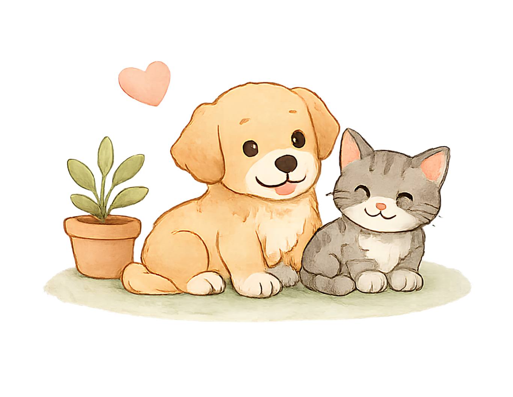
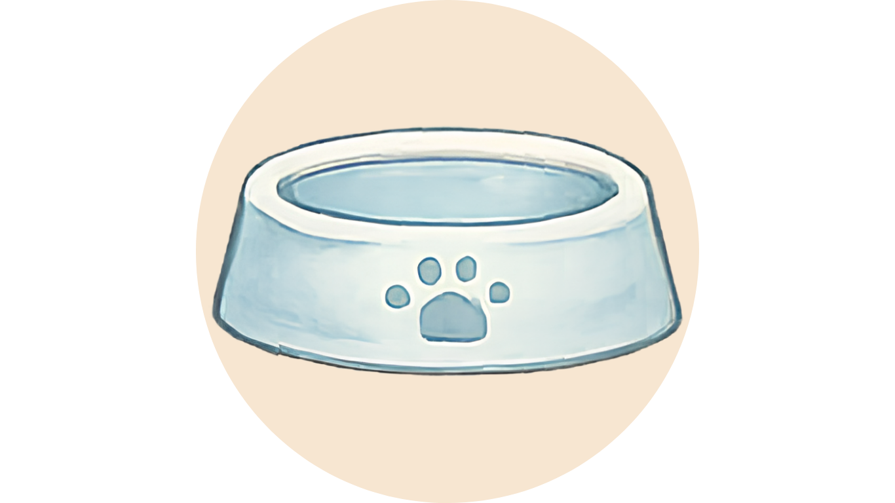
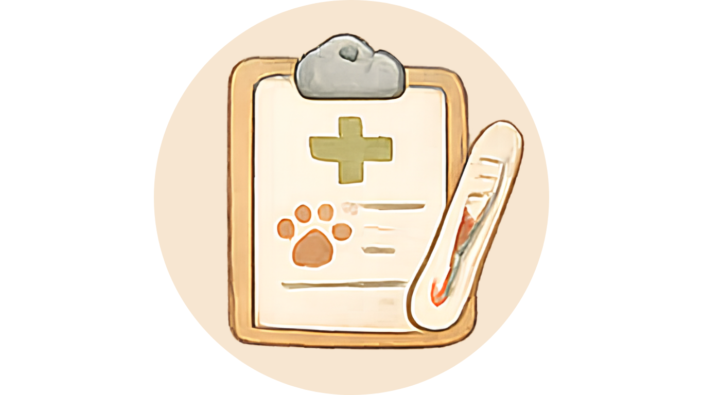
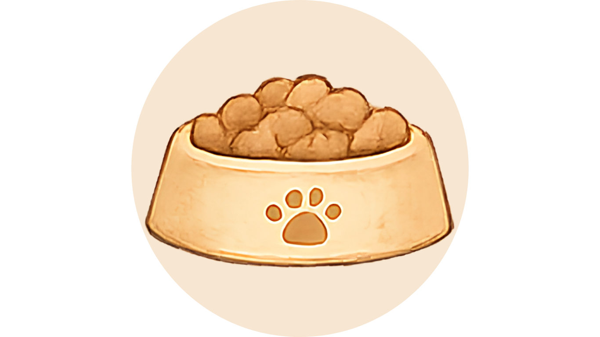
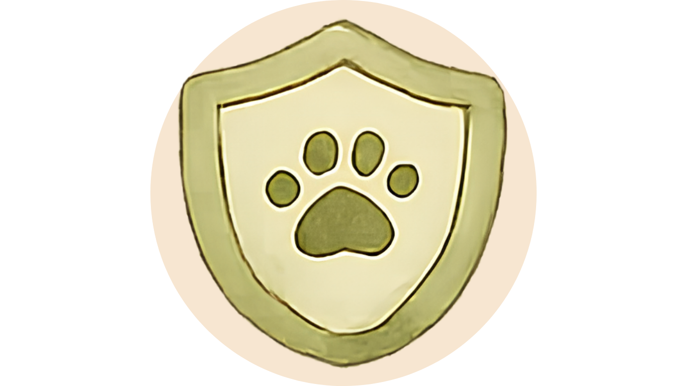
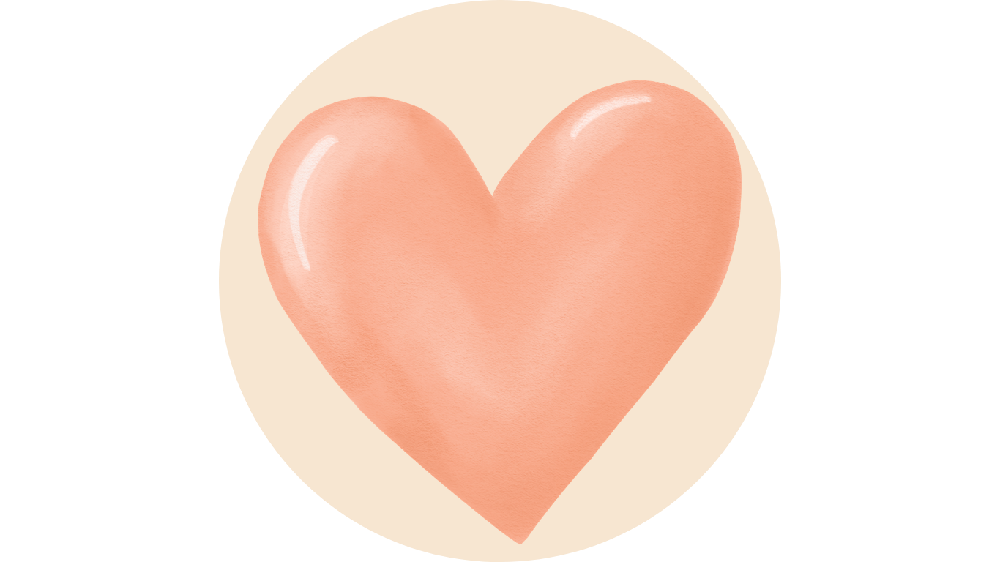

Nutrition & Feeding
Balanced meals, treats, and healthy habits.

Simple guides to help you care for rescued and adopted pets with confidence.
Balanced meals, treats, and healthy habits.
Preventive care, vaccines, and when to seek help.
Bathing, brushing, nail care, and more.
Positive training tips and behavior guidance.
Pet-proofing, safety, and comfort at home.
Helping your pet settle in and feel at home.

Featured Guide
The first week sets the tone for a happy life together.
Let your pet explore at their own pace.
Stick to a routine for meals, potty, and rest.
Use gentle voice, affection, and positive moments.

Always keep clean, fresh water available.

Schedule routine checkups for a healthy pet.

Introduce new food gradually over 7 days.

Remove hazards and keep poisons out of reach.

Trust takes time. You’re their new world.
♥ Every tip. Every step. A better life for every pet. ♥
Fur Tips Guide